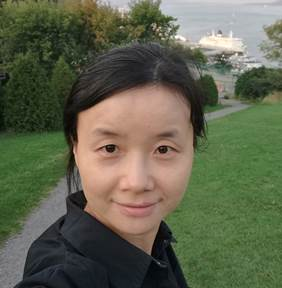

 |
Yuru PeiPhD, Associate professor School of Artificial Intelligence Peking University Beijing, China |
|
Address: |
2224, Science Building 2, No. 5 Yiheyuan Rd. Haidian District, Beijing, China, 100871 |
|
|
E-Mail: |
peiyuru at cis.pku.edu.cn |
|
|
|
|
|
|
|
|
|
|
|
|
|
TEACHING
|
Numerical Method (00130280), , 2007-. |
|
Applied Numerical Analysis, 2019-2022. |
|
Advanced Computer Graphics (04814560), 2007-2018 Scientific Writing, 2022-.
|
RESEARCH INTEREST
|
Computer Vision 3D Reconstruction Medical Image Processing |
PUBLICATIONS (* Corresponding/First author)
Selected
|
s Diya Sun, Yungeng Zhang, Yuru
Pei*, Peixin Li, Kaichen Nie, Tianmin Xu, Tianbing Wang*, and Hongbin Zha, Deep Volumetric Descriptor
Learning for Dense Correspondence of Cone-Beam Computed Tomography via
Spectral Maps. IEEE Transactions on medical imaging, 2022. s Yicheng Zhong, Yuru Pei*, Peixin Li, Yuke Guo, Gengyu Ma, Meng Liu,
Wei Bai, Wenhai Wu and Hongbin Zha,
Depth-Based 3D Face Reconstruction and Pose Estimation Using Shape-Preserving
Domain Adaptation, IEEE Transactions on Biometrics, Behavior, and Identity
Science 3 (2021): 6-15. s Yuru Pei*, Yunai
Yi, Gengyu Ma, Tae-Kyun
Kim, Yuke Guo, Tianmin
Xu, and Hongbin Zha, "Spatially Consistent
Supervoxel Correspondences of Cone-Beam Computed Tomography
Images." IEEE Transactions on medical imaging 37.10 (2018):
2310-2321. s Yuru Pei*, Gengyu
Ma, Gui Chen, Xiaoyun
Zhang, Tianmin Xu, Hongbin Zha,
Superimposition of Cone-Beam Computed Tomography Images by Joint
Embedding, IEEE Transactions on Biomedical Engineering, 2017, 64(6):
1218-1227. s Yuru Pei*, Fengchun
Huang, Fuhao Shi, and Hongbin Zha,
Unsupervised Image Matching based on Manifold Alignment, IEEE Transactions on
Pattern Analysis and Machine Intelligence (PAMI), VOL. 34, NO. 8, pp.
1658-1664, 2012. s Yuru Pei*, Fuhao
Shi, Hua Chen, Jia Wei, Hong Zha, Ruoping Jiang, and Tianmin Xu,
Personalized Tooth Shape Estimation from Radiograph and Cast, IEEE
Transactions on Biomedical Engineering, vol. 59, NO. 9, pp. 2400 �C 2411,
2012. s Yuru Pei*, Hongbin Zha, "Transferring of Speech Movements from Video to
3D Face Space," IEEE Transactions on Visualization and Computer Graphics
(VCG), vol. 13, no. 1, pp. 58-69, Jan/Feb, 2007. s Yungeng Zhang, Yuru Pei*, Hongbin Zha,
Learning Dual Transformer Network for Diffeomorphic Registration, Medical
Image Computing and Computer Assisted Intervention (MICCAI), 2021. s Diya Sun, Yungeng Zhang, Yuru
Pei*, Tianmin Xu, and Hongbin Zha,
Spectral Embedding Approximation and Descriptor Learning for Craniofacial
Volumetric Image Correspondence, Medical Image Computing and Computer
Assisted Intervention (MICCAI), 2021. Yungeng Zhang, s Yuru Pei*, Yuke
Guo, Gengyu Ma, Tianmin
Xu, and Hongbin Zha, Fully Convolutional Network
for Consistent Voxel-wise Correspondence, the 34th AAAI Conference on
Artificial Intelligence (AAAI-20), 2020. s Diya Sun, Yuru Pei*, Yuke Guo, Guangying Song, Gengyu Ma, Tianmin Xu, and Hongbin Zha,
Automatic Tooth Segmentation and Dense Correspondence of 3D Dental Model,
Medical Image Computing and Computer Assisted Intervention (MICCAI), 2020 s Yicheng Zhong, Yuru Pei*, Peixin Li, Yuke Guo, Gengyu Ma, Meng Liu,
Wei Bai, WenHai Wu4 and Hongbin Zha,
Face Denoising and 3D Reconstruction from A Single Depth Image, International
Conference on Automatic Face and Gesture Recognition, 2020. (Best Paper
Award) s Yungeng Zhang, Yuru Pei*, Gengyu Ma, Yuke Guo, Tianmin Xu, and
Hongbin Zha, Consistent Correspondence of Cone-Beam
CT Images Using Volume Functional Maps. In International Conference on
Medical Image Computing and Computer-Assisted Intervention (MICCAI) (pp.
801-809). Springer, Cham, 2018. s Yuru Pei*, Yunai
Yi, Gengyu Ma, Yuke Guo, Gui Chen, Tianmin Xu, Hongbin Zha, Mixed Metric Random Forest for Dense Correspondence
of Cone-Beam Computed Tomography Images, Medical Image Computing and Computer
Assisted Intervention (MICCAI), Springer, Cham, 2017: 283-290. s Yuru Pei*, T.-K. Kim, Hongbin Zha, Unsupervised Random Forest Manifold Alignment for
Lipreading, Proc. IEEE International Conference on Computer
Vision (ICCV), 2013. s Yuru Pei*, Hongbin Zha, and Zhongbiao Yuan, “The
Craniofacial Reconstruction from the Local Structural Diversity of Skulls,”
Computer Graphics Forum, 27(7), 1711-1718. 2008. |
Full List
|
s Yicheng Zhong, Yuru Pei, and Peixin Li, High
Fidelity Monocular 3D Face Reconstruction by Cross-View Consistency
Constraints. ChinaGraph, 2022. s Diya Sun, Yungeng Zhang, Yuru Pei*, Peixin Li, Kaichen Nie, Tianmin Xu, Tianbing Wang*, and Hongbin Zha,
Deep Volumetric Descriptor Learning for Dense Correspondence of Cone-Beam
Computed Tomography via Spectral Maps. IEEE Transactions on Medical Imaging,
2022. s Yi Fan, Yungeng Zhang, Gui Chen, Wei He, Guangying
Song, Harold Matthews, Peter Claes, Yuru Pei, Hongbin Zha, Anthony Penington, Nicky Kilpatrick, Paul Schneider, Ruoping Jiang, Tianmin Xu,
Automated assessment of mandibular shape asymmetry in 3-dimensions, American
Journal of Orthodontics and Dentofacial Orthopedics, Volume 161, Issue 5,
2022, Pages 698-707. s Yungeng Zhang, Haifang Qin, Peixin Li, Yuru Pei*, Yuke Guo, Tianmin Xu, Hongbin Zha,
Deformable Registration of Lateral Cephalogram and Cone-Beam Computed
Tomography Image, Medical Physics, 2021 Nov;48(11):6901-6915. Epub 2021 Sep 20. s Yungeng Zhang, Yuru Pei*, Hongbin Zha,
Learning Dual Transformer Network for Diffeomorphic Registration, Medical
Image Computing and Computer Assisted Intervention (MICCAI), 2021. s Diya Sun, Yungeng Zhang, Yuru Pei*, Tianmin Xu, and Hongbin Zha,
Spectral Embedding Approximation and Descriptor Learning for Craniofacial
Volumetric Image Correspondence, Medical Image Computing and Computer
Assisted Intervention (MICCAI), 2021. s Yunai Yi, Diya Sun, Peixin Li, Tae-Kyun Kim,
Tianmin Xu, Yuru Pei*,
Unsupervised Random Forest for Affinity Estimation, Computational Visual
Media Journal, 2021, 8(2) ：257-272. s Peixin Li, Yuru
Pei*, Yicheng Zhong, Yuke
Guo, Hongbin Zha, Robust 3D Face Reconstruction
from Single Noisy Depth Image Through Semantic Consistency, IET Computer
Vision, 2021, 15(6) : 393-404. s Yunai Yi, Diya Sun, Tae-Kyun Kim, Yuru Pei,
Unsupervised Random Forest for Affinity Estimation, Computational Visual
Media Conference, 2021. s Yicheng Zhong, Yuru Pei*, Peixin Li, Yuke Guo, Gengyu Ma, Meng Liu,
Wei Bai, WenHai Wu and Hongbin Zha,
Depth-Based 3D Face Reconstruction and Pose Estimation Using Shape-Preserving
Domain Adaptation, IEEE Transactions on Biometrics, Behavior, and Identity
Science 3 (2021): 6-15. s Yichen Pan, Si Chen, Linhui Shen, Yuru Pei, Yungeng Zhang, Tianmin Xu.
"Thickness Change of Masseter Muscles and the Surrounding Soft Tissues
in Female Patients During Orthodontic Treatment: A Retrospective Study".
BMC Oral Health, 2020. s Yungeng Zhang, Yuru Pei*, Yuke Guo, Gengyu Ma, Tianmin Xu, and
Hongbin Zha, Fully Convolutional Network for
Consistent Voxel-wise Correspondence, the 34th AAAI Conference on Artificial
Intelligence (AAAI-20), 2020. s Diya Sun, Yuru Pei*, Yuke Guo, Guangying Song, Gengyu Ma, Tianmin Xu, and Hongbin Zha,
Automatic Tooth Segmentation and Dense Correspondence of 3D Dental Model,
Medical Image Computing and Computer Assisted Intervention (MICCAI), 2020 s Yungeng Zhang, Yuru Pei*, Si Chen, Yuke Guo, Gengyu Ma, Tianmin Xu, and Hongbin
Zha, Volumetric Registration-Based Cleft Volume
Estimation of Alveolar Cleft Grafting Procedures, IEEE International
Symposium on Biomedical Imaging (ISBI’20), IEEE, 2020. s Peixin Li, Yuru Pei*, Yuke
Guo, Gengyu Ma, Tianmin
Xu, and Hongbin Zha, Non-Rigid 2d-3d Registration
Using Convolutional Autoencoders, IEEE International Symposium on Biomedical
Imaging (ISBI’20), IEEE, 2020. s Diya Sun, Yuru Pei*, Guangying Song, Yuke
Guo, Gengyu Ma, Tianmin
Xu, and Hongbin Zha, Teeth Segmentation and
Labeling from Digital Dental Casts, IEEE International Symposium on
Biomedical Imaging (ISBI’20), IEEE, 2020. s Yicheng Zhong, Yuru Pei*, Peixin
Li, Yuke Guo, Gengyu Ma,
Meng Liu, Wei Bai, WenHai Wu, and Hongbin Zha, Face Denoising and 3D Reconstruction from A Single
Depth Image, International Conference on Automatic Face and Gesture
Recognition, 2020. (Best Paper Award) s Peixin Li, Yuru Pei*, Yicheng
Zhong, Yuke Guo, Gengyu
Ma, Meng Liu, Wei Bai, WenHai Wu, and Hongbin Zha, An Unsupervised Approach for 3D Face Reconstruction
from A Single Depth Image, Computer Graphics International, 2020. s Peixin Li, Yuru Pei*, Yuke
Guo, Hongbin Zha, 3D Face Reconstruction and
Semantic Annotation from Single Depth Image, International Conference on
Computer Animation and Social Agents (CASA), 2020. s Yungeng Zhang, Yuru Pei*, Yuke
Guo, Si Chen, Tianmin Xu, and Hongbin Zha, Cleft Volume Estimation and Maxilla Completion Using
Cascaded Deep Neural Networks, International Workshop on Machine Learning in
Medical Imaging, 2020. s Yikun Jiang, Peixin Li, Yungeng
Zhang, Yuru Pei*, Yuke
Guo, Tianmin Xu, Xiaoru
Yuan, 3D Volume Reconstruction from Single Lateral X-ray Image via
Cross-Modal Discrete Embedding Transition, International Workshop on Machine
Learning in Medical Imaging, 2020. s Mochen Yu, Yuke Guo, Diya Sun, Yuru
Pei*, Tianmin Xu, Automatic Tooth Segmentation and
3D Reconstruction from Panoramic and Lateral Radiographs, Chinese Conference
on Pattern Recognition and Computer Vision (PRCV), 2020. s Diya Sun, Yuru Pei*, Yungeng Zhang, Yuke
Guo, Gengyu Ma, Tianmin
Xu, and Hongbin Zha, Correspondence-Steered
Volumetric Descriptor, Learning Using Deep Functional Maps, 9th International
Workshop on Machine Learning in Medical Imaging (MLMI 2019), LNCS, Springer, 2019. s Yungeng Zhang, Yuru Pei*, Haifang
Qin, Yuke Guo, Gengyu Ma,
Tianmin Xu, and Hongbin Zha，Masseter Muscle Segmentation from Cone-Beam CT Images Using Generative
Adversarial Network, IEEE International Symposium on Biomedical Imaging
(ISBI’19), IEEE, 2019. s Yuke Guo, Yuru Pei*, Incremental Feature Forest
for Real-Time SLAM on Mobile Devices, Chinese Conference on Pattern
Recognition and Computer Vision (PRCV), 431-438, Springer, Cham, 2018. s Haifang Qin, Yuru Pei*, Yuke
Guo, Gengyu Ma, Tianmin
Xu, and Hongbin Zha, Masseter Segmentation from Computed
Tomography Using Feature-Enhanced Nested Residual Neural Network, 9th
International Workshop on Machine Learning in Medical Imaging (MLMI 2018),
LNCS, Springer, 2018. s Yungeng Zhang, Yuru Pei*, Haifang
Qin, Yuke Guo, Gengyu Ma,
Tianmin Xu, and Hongbin Zha,
Temporal Consistent 2D-3D Registration of Lateral Cephalograms and Cone-Beam
Computed Tomography Images, 9th International Workshop on Machine Learning in
Medical Imaging (MLMI 2018), LNCS, Springer, 2018. s Diya Sun, Yuru Pei*, Yuke Guo, Gengyu
Ma, Tianmin Xu, and Hongbin Zha,
Dense Correspondence of Cone-Beam Computed Tomography Images Using Oblique
Clustering Forest, British Machine Vision Conference (BMVC), 2018. s Yungeng Zhang, Yuru Pei*, Yuke
Guo, Gengyu Ma, Tianmin
Xu, and Hongbin Zha, Consistent Correspondence of
Cone-Beam CT Images Using Volume Functional Maps. In International
Conference on Medical Image Computing and Computer-Assisted Intervention
(MICCAI) (pp. 801-809). Springer, Cham, 2018. s Yuru Pei*, Yunai Yi, Gengyu
Ma, Tae-Kyun Kim, Yuke
Guo, Tianmin Xu, and Hongbin Zha,
"Spatially Consistent Supervoxel Correspondences of Cone-Beam Computed
Tomography Images." IEEE Transactions on Medical
Imaging 37.10: 2310-2321, 2018. s Yuru Pei*, Yunai Yi, Gengyu
Ma, Yuke Guo, Gui Chen, Tianmin Xu, Hongbin Zha, Mixed
Metric Random Forest for Dense Correspondence of Cone-Beam Computed
Tomography Images, Medical Image Computing and Computer Assisted Intervention
(MICCAI), Springer, 283-290, 2017. s Yuru Pei*, Gengyu Ma, Gui
Chen, Xiaoyun Zhang, Tianmin
Xu, Hongbin Zha, Superimposition of Cone-Beam
Computed Tomography Images by Joint Embedding, IEEE Transactions on
Biomedical Engineering, 64(6): 1218-1227, 2017. s Yuru Pei*, Xingsheng
Ai, Hongbin Zha, Tianmin
Xu, and Gengyu Ma, 3D Exemplar-Based Random Walks
for Tooth Segmentation from Cone-Beam Computed Tomography Images, Medical
Physics, 43.9 (2016): 5040-5050. s Yuru Pei*, Yunai
Yi, Gui Chen, Tianmin Xu,
Hongbin Zha, Gengyu Ma,
Voxel-Wise Correspondence of Cone-Beam Computed Tomography Images by Cascaded
Randomized Forest, IEEE International Symposium on Biomedical Imaging
(ISBI’17), IEEE, 2017: 481-484. s Yuru Pei*, Yungeng
Zhang, Haifang Qin, Gengyu
Ma, Yuke Guo, Tianmin Xu,
and Hongbin Zha, Non-rigid Craniofacial 2D-3D
Registration Using CNN-Based Regression, International Workshop on Deep
Learning in Medical Image Analysis (DLMIA), LNCS, Springer, Cham, 2017:
117-125. s Yuru Pei*, Yunai
Yi, Gengyu Ma, Yuke Guo, Gui Chen, Tianmin Xu, and
Hongbin Zha, Finding Dense Supervoxel
Correspondence of Cone-Beam Computed Tomography Images, Machine Learning in
Medical Imaging. MLMI 2017. Lecture Notes in Computer Science: 114-122,
Springer. s Yuru Pei*, Haifang
Qin, Gengyu Ma, Yuke Guo,
Gui Chen, Tianmin Xu, and
Hongbin Zha, Multi-Scale Volumetric ConvNet with Nested Residual Connections for Segmentation
of Anterior Cranial Base, Machine Learning in Medical Imaging. MLMI 2017.
Lecture Notes in Computer Science: 114-122, Springer. s Yuru Pei*, Gengyu
Ma, Fast 3D Hand Estimation for Mobile Interactions, Proc. Int. Conf. on
Pattern Recognition (ICPR), IEEE, 2016: 979-984. s Yuru Pei*, Fanfan Dai, Tianmin Xu, Hongbin Zha, Gengyu Ma, Volumetric Reconstruction of Craniofacial
Structures From 2D Lateral Cephalograms By Regression Forest, in Proc. IEEE
Int. Conf. on Image Processing (ICIP’16), IEEE, 2016: 4052-4056. s Yuru Pei*, Lei Kou, Hongbin Zha, Anatomical Structure Similarity Estimation by Random
Forest, in Proc. IEEE Int. Conf. on Image Processing (ICIP’16), IEEE,
2016: 2941-2945. s Weiwei Liu, Yuru Pei*, Hongbin Zha,
Multi-Modal Brain Image Registration Based on Manifold-to-Manifold Distance,
Proc. International Conference on Image and Graphics, LNCS 9218: 538-546
(2015). s Yuru Pei*, T.-K. Kim, Hongbin Zha, Unsupervised Random Forest Manifold Alignment for
Lipreading, Proc. IEEE International Conference on Computer
Vision (ICCV), 2013. s Yuru Pei*, Fengchun
Huang, Fuhao Shi, and Hongbin Zha,
Unsupervised Image Matching based on Manifold Alignment, IEEE Transactions on
Pattern Analysis and Machine Intelligence (PAMI), VOL. 34, NO. 8, pp. 1658-1664,
2012. s Yuru Pei*, Fuhao
Shi, Hua Chen, Jia Wei, Hong Zha, Ruoping Jiang, and Tianmin Xu,
Personalized Tooth Shape Estimation from Radiograph and Cast, IEEE
Transactions on Biomedical Engineering, vol. 59, NO. 9, pp. 2400 �C 2411,
2012. s Yuru Pei*, Bin Liu, Hongbin Zha, Bing Han, Tianmin Xu,
Anatomical Structure Sketcher for Cephalograms by Bimodal Deep Learning,
Proc. British Machine Vision Conference （BMVC）, 2013. s Wai-Lam Hoo, Tae-Kyun Kim, Yuru Pei*, Chee-Seng Chan, Enhanced Random Forest with Image/Patch-Level
Learning for Image Understanding, Int. Conf. on Pattern Recognition, ICPR
2014. s Xiaonan Yu, Bin Liu, Yuru Pei*, and Tianmin Xu
(2014) Evaluation of facial attractiveness for patients with
malocclusion: A machine-learning technique employing Procrustes. The
Angle Orthodontist: May 2014, Vol. 84, No. 3, pp. 410-416. s Fengchun Huang, Yuru Pei*, H. Zha, Automatic
Label Transfer of Lip Motion Sequences by Manifold Alignment, in Proc. IEEE Int. Conf. on Image Processing
(ICIP’12), 2012. s Anjun Wei, Yuru Pei*, Hongbin Zha,
Random-Sampling-Based Spatial-Temporal Feature for Consumer Video Concept
Classification, in Proc. IEEE Int. Conf. on Image Processing (ICIP’12), 2012. s Fuhao Shi, Yuru
Pei*, Hongbin Zha, " Interactive Modeling of
3d Facial Expressions with Hierarchical Gaussian Process Latent Variable
Models". Proc. IEEE Int. Conf. on Image Processing (ICIP’09), pp.2477-2480, 2009. s Yuru Pei*, Hongbin Zha, " Visyllable-Specific
Facial Transition Motion Embedding and Extraction ". Proc. IEEE Int. Conf.
on Image Processing (ICIP’09), pp.1809-1812, 2009. s Yuru Pei*, Hongbin Zha, “3D Facial Expression Editing Based on the Dynamic
Graph Model,” IEEE Int. Conf. on Multimedia & Expo (ICME ‘09), pp.
1354-1357, Jun.28-Jul.3, New York, 2009. s Yuru Pei*, Hongbin Zha, and Zhongbiao Yuan,
"Facial Feature Estimation from the Local Structural Diversity of
Skulls". Proc. 19th Int. Conf. on Pattern Recognition (ICPR’08), Tampa, Florida,
U.S.A., December 8-11, 2008. s Yuru Pei*, Hongbin Zha, and Zhongbiao Yuan,
"Creating a face model from an unknown skull based on the tissue
map". Proc. 2008 IEEE Int. Conf. on Image Processing (ICIP’08), San Diego,
California, U.S.A., October 12-15, 2008. s Yuru Pei*, Hongbin Zha, and Zhongbiao Yuan, “The
Craniofacial Reconstruction from the Local Structural Diversity of Skulls,”
Computer Graphics Forum, 27(7), 1711-1718. 2008. s Yuru Pei*, Hongbin Zha, "Transferring of Speech Movements from Video to
3D Face Space," IEEE Transactions on Visualization and Computer Graphics
(VCG), vol. 13, no. 1, pp. 58-69, Jan/Feb, 2007. s Yuru Pei*, Hongbin Zha, “Stylized Synthesis of Facial Speech Motions”,
Computer Animation & Virtual Worlds, vol. 18, no. 4-5, pp.517-526, 2007. s Yuru Pei, Hongbin Zha, “Vision Based Speech Animation Transferring with Underlying
Anatomical Structure”, Computer Vision�CACCV 2006, LNCS 3851, Part 1,
pp.591-600, 2006. s Yuru Pei, Hongbin Zha, “Transferring Speech Video onto 3D Realistic Human
Faces”, Proc. Pacific Graphics 2005(PG05), pp. 13-15, 2005. s Yuru Pei, Hongbin Zha, Zhongbiao Yuan, “Tissue
Map based Craniofacial Reconstruction and Facial Deformation Using RBF
Network”, Proc. Int. Conf. on Image and Graphics (ICIG04), pp.398-401, 2004. s Yuru Pei, Hongbin Zha, “Shape and Expression Space of Realistic Human
Faces”, Journal of Computer- Aided Design & Computer Graphics, vol. 18,
no. 5, pp.1-7, 2006. (Chinese) s Yuru Pei, Yue Chen, “Object
Reconstruction Based on Polyhedral Visual Hulls”, Proc. Int. Conf. on
Computer Graphics and Spatial Information System (CG&SIS02), pp.65-73,
Beijing, China, 2002. s Yuru Pei, Yue Chen,
“Polyhedral Visual Hull Generation Based on Edge-Pool-Searching Technique,”
Proc. Int. Conf. on Visual System and Multimedia (VSMM02), pp.608-617, Gyeongju, Korea, 2002. s Yue Chen, Yuru Pei, “Fast Polyhedral Surface Mesh Generation
Algorithm for 3D Objects based on 2D Photo Images”, Journal of Zhejiang
University (Engineering Science), NO.5, vol.37, pp.537-542, Sep.2003
(Chinese). s Yuru Pei, Yue Chen,
“Polyhedral Visual Hull Generation based on Degeneration Polygons
Intersection”, Computer Engineering and Applications, NO. 28, pp.109-112,
Sep.2003 (Chinese). s Yuru Pei, Yue Chen, “Fast
Polyhedral Visual Hull Reconstruction Algorithm from Photo Series”, Computer
Engineering, NO.16, Vol29, pp.79-81, Sep.2003 (Chinese). s Yuru Pei, Yue Chen, “Photo
Image based Modeling and New Algorithm for Surface Mesh Generation”, Proc. of
Conference on Visual Reality and Vision 2002, pp.45-53, Hangzhou, China
(Chinese). |
专利
锥束计算机断层扫描图像注册与重叠方法， 201610105206.X
一种由二维X光图像重建三维体图像的方法及其应用，201610157767.4
种对锥束CT图像进行牙列分割的方法， 201610157705.3
一种锥束CT图像三维颅面结构的自动解析方法， 201611185771.8
锥束CT图像间体素稠密对应的自动建立方法，201611184654.X
锥束计算机断层扫描图像与X光图像配准方法，201710756002.7
锥束计算机断层扫描图像对应与配准方法，201710755960.2
锥束计算机断层扫描图像特征提取与对应方法，2019109327505；
三维颅面锥形束CT图像配准方法，2019110297125.
一种三维牙列分割与标注方法， 2020100541296
一种利用锥束计算机断层扫描图像自动分割咀嚼肌的方法，202111676854.8
上颌骨缺失图像自动补全方法，202111683747.8
三维颌面体图像的谱嵌入近似与特征提取方法，2021110484383
一种用于三维核磁共振图像的配准方法，2021110420324
上颌骨缺失图像自动补全方法，202111683747.8
一种利用锥束计算机断层扫描图像自动分割咀嚼肌的方法，202111676854.8
项目
自然科学基金面上项目，面向三维图像配准与属性迁移的无监督聚类森林测度学习方法研究， 61876008，负责人，2019年1月-2022年。
自然科学基金面上项目，61272342，属性迁移学习及其在面部几何与行为数据分析中的应用，2013/01-2016/12，负责人。
自然科学基金青年基金，60803067，基于多模态数据的语音相关面部形变机理研究，2009/01-2011/12，负责人。
北京大学新工科交叉专项项目，基于跨维度双向离散嵌入映射面向单视点X光片三维图像重建方法研究，负责人， 2022。
口腔数字化医疗技术和材料国家工程实验室开放课题，错合畸形牙合特征智能识别的探索性研究，负责人， 2019-2021年。
基于深度学习的RGB-D实时人脸三维重建研究项目，YB2018045262，负责人，华为， 2018-2019年。
北京市支持中央高校共建项目――青年英才计划，负责人，2013-2015。
科研奖励
北京大学优秀博士论文二等奖
公安部科学技术二等奖(2011)
IEEE FG’20最佳论文奖